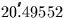

Next: SLA_EULER - Rotation Matrix from Euler Angles
Up: SUBPROGRAM SPECIFICATIONS
Previous: SLA_EQGAL - J2000 to Galactic
- ACTION:
- Compute the E-terms vector - the part of the annual
aberration which arises from the eccentricity of the
Earth's orbit.
- CALL:
- CALL sla_ETRMS (EP, EV)
- GIVEN:
-
- RETURNED:
-
- NOTE:
- Note the use of the J2000 aberration constant (
 ).
This is a reflection of the fact that the E-terms embodied in
existing star catalogues were computed from a variety of
aberration constants. Rather than adopting one of the old
constants the latest value is used here.
- REFERENCES:
- 1.
- Smith, C.A. et al., 1989. Astr.J. 97, 265.
- 2.
- Yallop, B.D. et al., 1989. Astr.J. 97, 274.
Next: SLA_EULER - Rotation Matrix from Euler Angles
Up: SUBPROGRAM SPECIFICATIONS
Previous: SLA_EQGAL - J2000 to Galactic
SLALIB --- Positional Astronomy Library
Starlink User Note 67
P. T. Wallace
12 October 1999
E-mail:ptw@star.rl.ac.uk